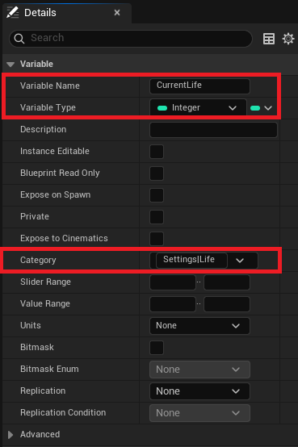
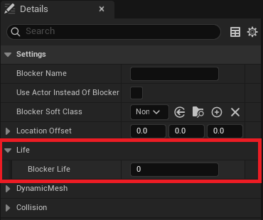
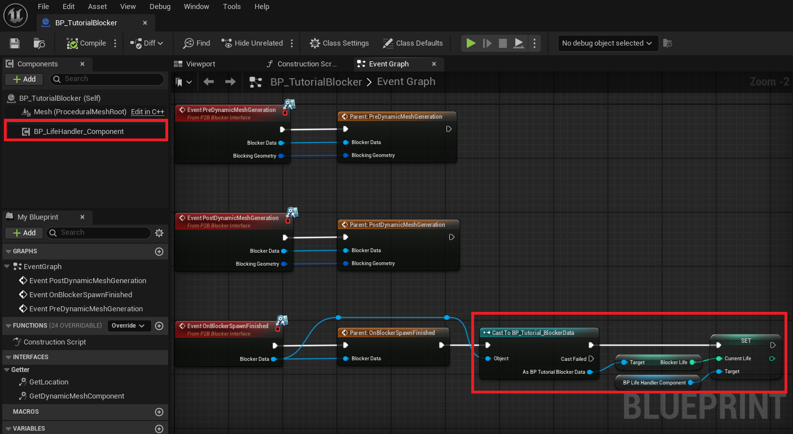
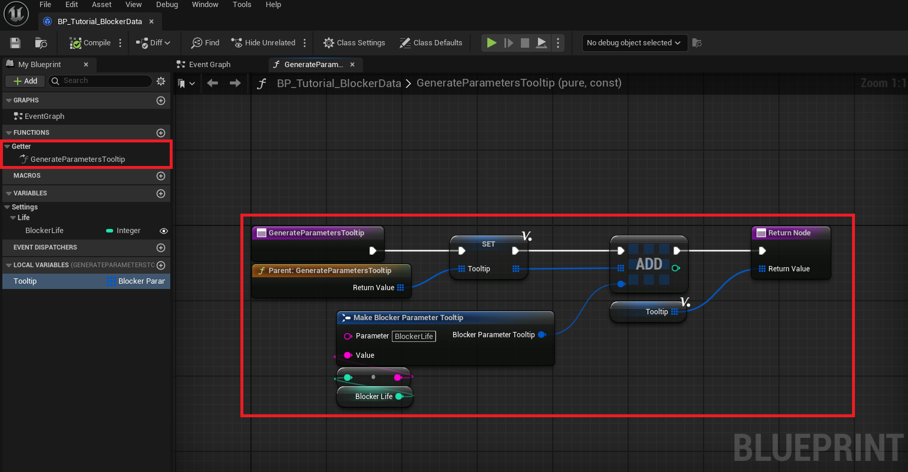

Blockers
Blocker and Blocker Data can be created in both C++ and Blueprint. This tutorial will describe only the Blueprint implementation.
Once you understand Blueprint, implementing it in C++ should be straightforward.
Create Blocker
First, you will need to create two Blueprints inheriting from:
P2B_BlockerCall itBP_TutorialBlocker. This will be the object spawned by the generator when associated with a color.P2B_BlockerDataCall itBP_TutorialBlockerData. This will hold any custom data you preset in theDataAsset, which will then be sent to the associatedBlocker.

If you open BP_TutorialBlocker, you will have access to several overrideable functions that are called during Blocker generation.
The blocker is spawned in a deferred state to allow modifications before the construction script:
PreDynamicMeshGenerationCalled beforeFinish Spawnand before theDynamicMeshis generated.PostDynamicMeshGenerationCalled beforeFinish Spawnand after theDynamicMeshis generated.OnBlockerSpawnFinishedCalled afterFinish Spawn, when the construction script has been executed.
These functions provide access to the Blocker Data class that generated the Blocker. You can cast it to any type, and if the cast is valid, use the data it holds.
These functions are the core of customization, where you will add all your logic.

Next, open the Template Data Asset used by your Blocker Generator. This tutorial uses PDA_Default_Generation. Modify the following:
- Set
Default Blockerto the new data classBP_TutorialBlockerData. - Update
Blocker Soft Classin the settings toBP_TutorialBlocker.
If you hit generate, all blockers will now be of the type you've just created.

If you want only a specific color to generate this new blocker, simply create a new Blocker DataAsset, let's call it PDA_Tutorial_Blocker and add it to the list.

Open it and add two rows to the Color to Blocker section. This allows you to spawn two types of Tutorial_Blocker with different settings.

Finally, if you open Paint 2 Blocking Mode, you will see that the new blocker colors are available for drawing.

Use Case
Now that the custom Blocker is set up, let's see how to use it properly. The goal of the plugin is to generate blockers and iterate on game design quickly.
For this reason, a Blocker isn't just a 3D mesh with a collider, it can also have logic and play a role in gameplay.
For example, blockers can define cover areas, loot spawn zones, destructible barricades, etc.
Let's simulate a life system as an example. First, create a new component call it BP_LifeHandler_Component.

Open it and add a new variable: CurrentLife. I recommend assigning it a proper Category, such as Settings|Life.

Next, open BP_TutorialBlockerData and do the same, add a new variable called BlockerLife, and set its Category to Settings|Life.
If you check the Class Default values, they should look like this:

Now, open BP_TutorialBlocker, add the BP_LifeHandler_Component, and override PostDynamicMeshGeneration or OnBlockerSpawnFinished.
Don't forget to call the parent function.
Now, follow these steps:
- Cast
BlockerDatatoBP_TutorialBlockerData. - If the cast is valid:
- Get the
BlockerLifevalue from the data. - Set
CurrentLifeinBP_LifeHandler_Component.

Finally, open PDA_Default_Generation or PDA_Tutorial_Blocker and set the blocker life values as needed.

Now, when you paint different blockers, they will have different life values. This example is simplified and lacks logic for gameplay, but it's easy to imagine a real system with targets and health mechanics.
Custom Tooltip
Blocker Data is directly linked to Paint 2 Blocker Mode, meaning you can pass information between them.
When this mode is open, hovering over a Color Preset will display a tooltip. You can add custom information to this tooltip
by overriding GenerateParametersTooltip in the BlockerData class.
For example, to display the BlockerLife parameter in the tooltip:
- Override
GenerateParametersTooltipand call the parent function. - Create a local array variable and name it
Tooltip. - Add an element to the array with
ParameterNameand the value ofCurrentLife. - Return the
Tooltipvariable.

Open Paint 2 Blocker Mode and hover over a color. The tooltip should now display the BlockerLife.

Blocker Interface
The generation system isn't limited to the P2B_Blocker class, it is also possible to turn any actor to a Blocker thanks to the
IP2B_Blocker_Interface interface. The following instruction takes into account that you've followed the previous step. The P2B_BlockerData
will be omited as it work the same.
The setup is really similar create two Blueprints inheriting from:
AActor, and call itBP_TutorialActorBlocker. It'll implemente the interfaceP2B_BlockerDataCall itBP_TutorialActorBlockerData. This will hold any custom data you preset in theDataAsset.

In the ClassSettings of the BP_TutorialActorBlocker implement the P2B_Blocker_Interface.
The Actor will now have 4 new function that you can override. The 3 first have already been explained and are used during the Blocker generation.
The Blockers are by default meant to generate 3D objects, so a DynamicMeshComponent is present in the base class. For Actors, it might be different,
and depending on the usage, you might need or not need the generation.
To enable the generation, you will have to override GetDynmicMeshComponent and return a valid DynamicMeshComponent.

Now that the Actor Blocker is set up, you can add it to any Blocker Data Asset:
- Select the correct
BlockerData - Toggle
UseActorInsteadOfBlocker - Select
BP_TutorialActorBlockerin theActorSoftClassparameter

For example, the FOW_P2B_Bridge uses a Player Start as a blocker but doesn't need a 3D mesh to be generated. By doing this, it becomes possible to
change the starting point of the player with the Paint2BlockingMode.
Documentation built with Unreal-Doc v1.0.9 tool by PsichiX